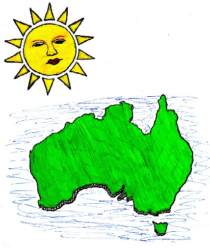

"Mother, I have work for you. Go down to the Earth and awake the sleeping spirits. Give them forms."
The Sun Mother glided down to Earth, which was bare at the time and began to walk in all directions and everywhere she walked plants grew. After returning to the field where she had begun her work the Mother rested, well pleased with herself. The Father of All Spirits came and saw her work, but instructed her to go into the caves and wake the spirits.
This time she ventured into the dark caves on the mountainsides. The bright light that radiated from her awoke the spirits and after she left insects of all kinds flew out of the caves. The Sun Mother sat down and watched the glorious sight of her insects mingling with her flowers. However once again the Father urged her on.
The Mother ventured into a very deep cave, spreading her light around her. Her heat melted the ice and the rivers and streams of the world were created. Then she created fish and small snakes, lizards and frogs. Next she awoke the spirits of the birds and animals and they burst into the sunshine in a glorious array of colors. Seeing this the Father of All Spirits was pleased with the Sun Mother's work.
She called all her creatures to her and instructed them to enjoy the wealth of the earth and to live peacefully with one another. Then she rose into the sky and became the sun.

The living creatures watched the Sun in awe as she crept across the sky, towards the west. However when she finally sunk beneath the horizon they were panic-stricken, thinking she had deserted them. All night they stood frozen in their places, thinking that the end of time had come. After what seemed to them like a lifetime the Sun Mother peeked her head above the horizon in the East. The earth's children learned to expect her coming and going and were no longer afraid.
At first the children lived together peacefully, but eventually envy crept into their hearts. They began to argue. The Sun Mother was forced to come down from her home in the sky to mediate their bickering. She gave each creature the power to change their form to whatever they chose. However she was not pleased with the end result. The rats she had made had changed into bats; there were giant lizards and fish with blue tongues and feet. However the oddest of the new animals was an animal with a bill like a duck, teeth for chewing, a tail like a beavers and the ability to lay egg. It was called the platypus.
The Sun Mother looked down upon the Earth and thought to herself that she must create new creatures less the Father of All Spirits be angered by what she now saw. She gave birth to two children. The god was the Morning Star and the goddess was the moon. Two children were born to them and these she sent to Earth. They became our ancestors. She made them superior to the animals because they had part of her mind and would never want to change their shape.